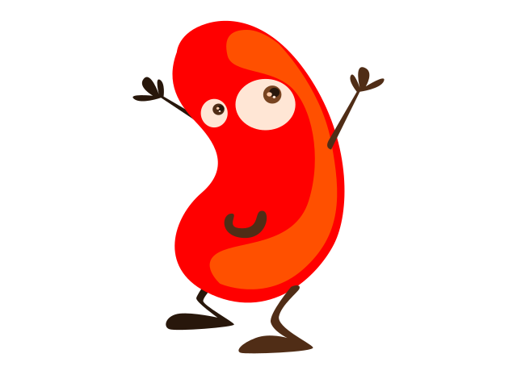

Hot Beans Web
A webdesign company that creates personal websites for your company
I setup this company in 2001. After leaving my job in London as a Web Developer. Due to deciding that I wanted to work at a smaller company nearer to home in Cambridge. I went to the University of Cambridge where I took a degree in Computer Science. Since then I worked in multiple businesses in Cambridge. After 3 years of working in Cambridge I decided that I would start commuting to London and then took a job in the city centre working as a Trainee Web Developer. After 2 years of being a Trainee Web Developer I became a Web Developer. A few years working there I decided that I wanted a change and a new project and then setup Hot Beans Web in 2001. Since then I have employed 1 Web Developer and 3 Trainee Web Developers.
I joined Hot Beans Web in 2003 as a Trainee Web Developer. After spending 2 years I became the first employed web developer. I had no experience in the Web Design Industry and was looking for a way to get into this Industry. I enjoyed computer science throughout my schooling career. After completing my A-Levels including one in computer science. I found this local business where I became a Trainee Web Developer.
Since then I have worked at Hot Bean Web developing new skills and knowledge in this Industry. Helping with the training of new and upcoming web developers.
I have just joined Hot Beans Web as a Trainee Web Devloper. Last September after completing a degree at Cambridge University, where I completed a degree in Computer Science. After completing my degree, I then started looking for a job in Web desgin. Looking in my local area I found Hot Beans Web. I wanted a small friendly business to work at, somewhere I could lean skills and progress to become an experience web developer. This job is perfect for me every day I am able to learn new and exciting skills and develope them. This job has given me so many opputunities to learn on the job.